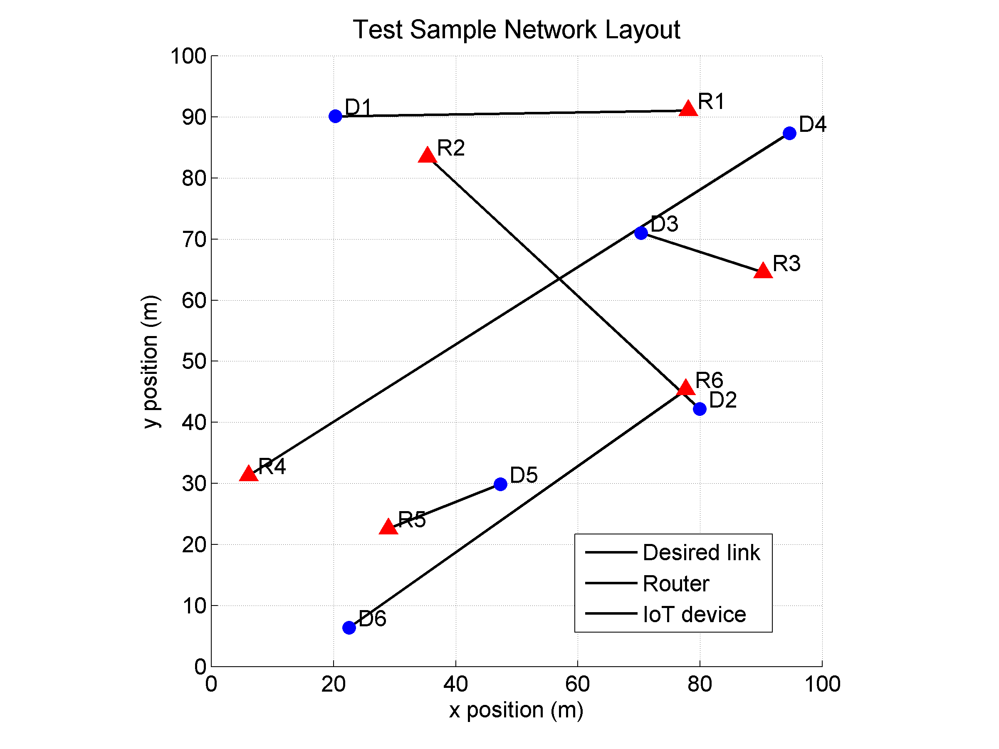
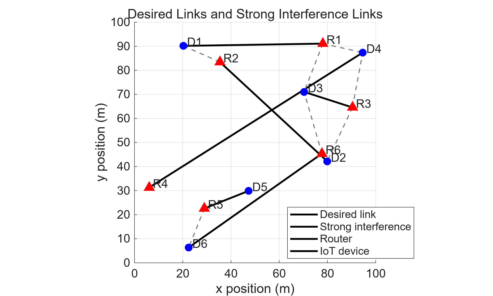
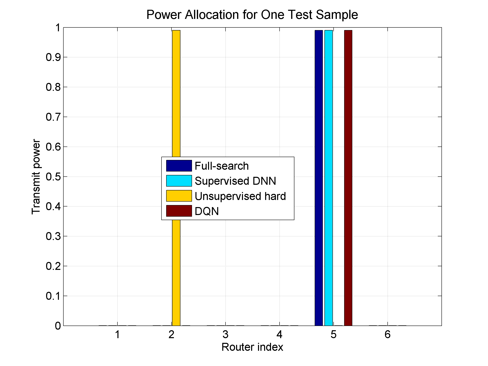
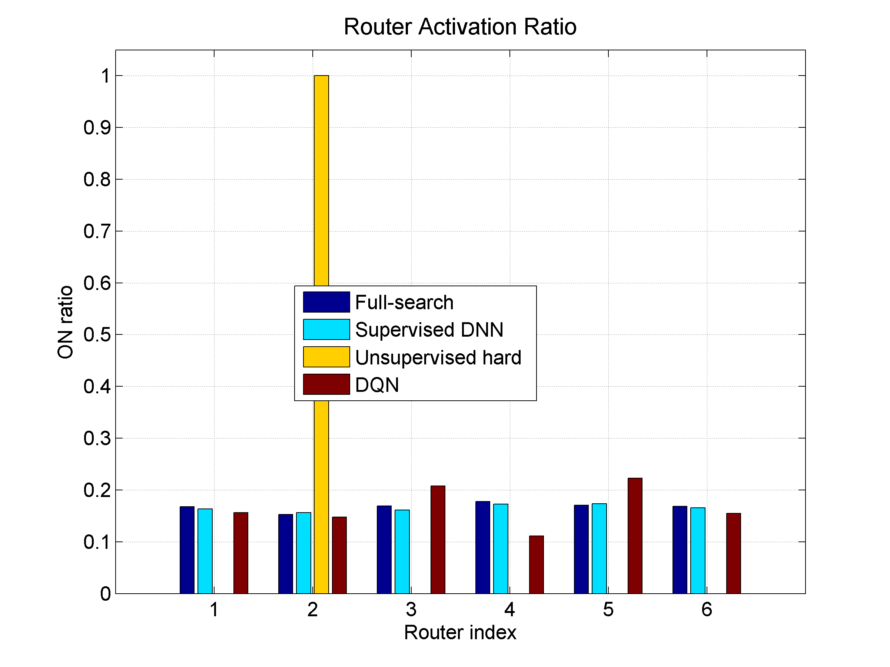

Capacity benchmark
Full-search 대비 평균 용량비
Supervised DNN과 Unsupervised DNN이 최적 기준에 가장 가깝습니다.
Final experiment
Capacity benchmark
Supervised DNN과 Unsupervised DNN이 최적 기준에 가장 가깝습니다.
Link selection
Sample preview
앞 8개 테스트 샘플입니다. y축은 0.25~1.00 기준입니다.
Sample 559
Uncoded BPSK
Ideal coding



